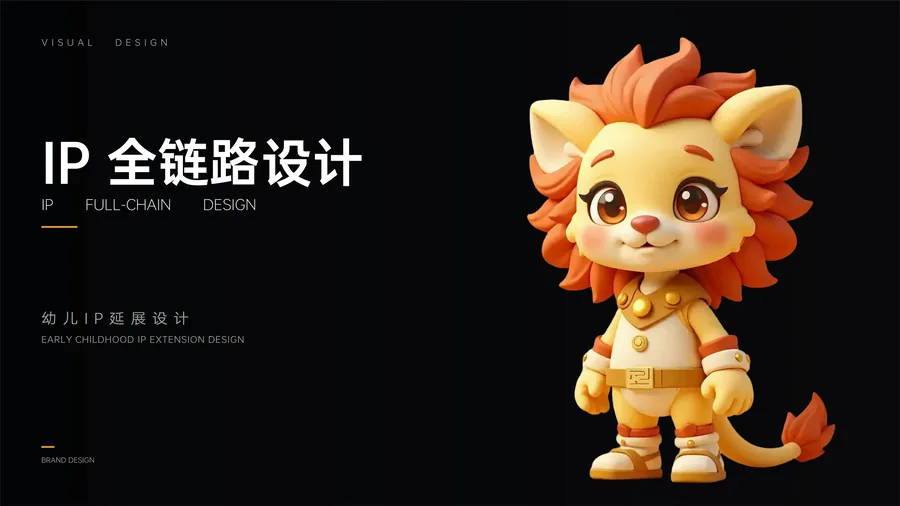
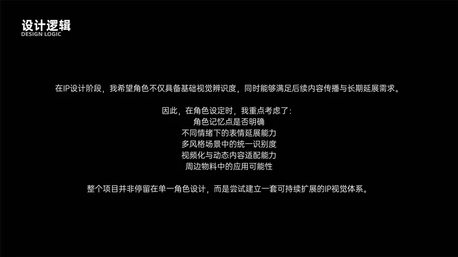
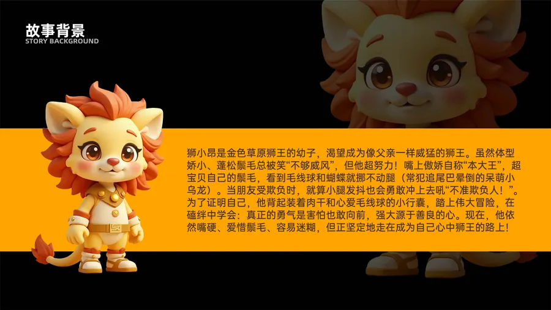
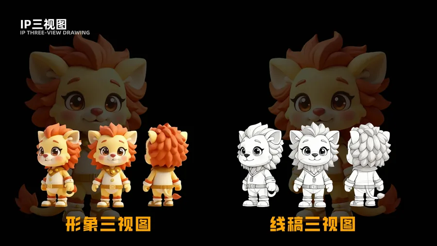
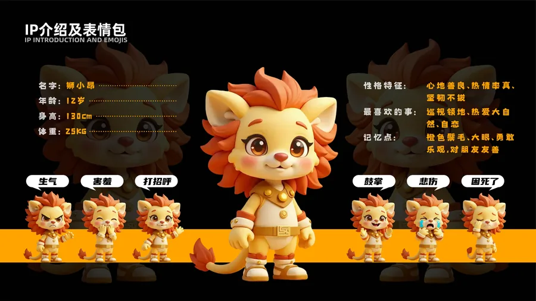
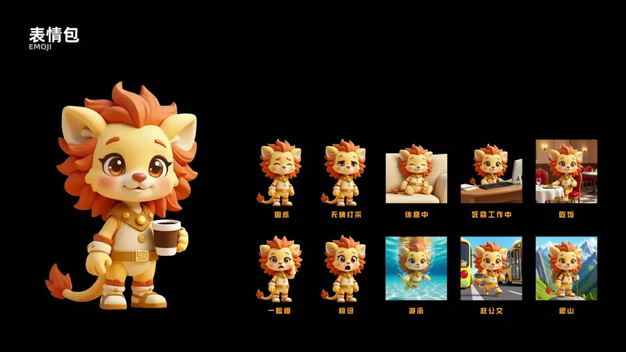
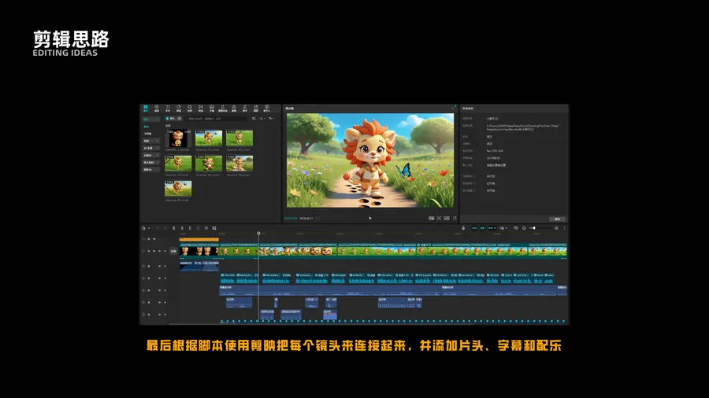
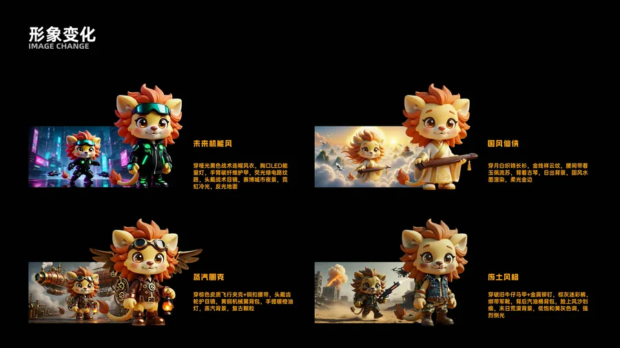
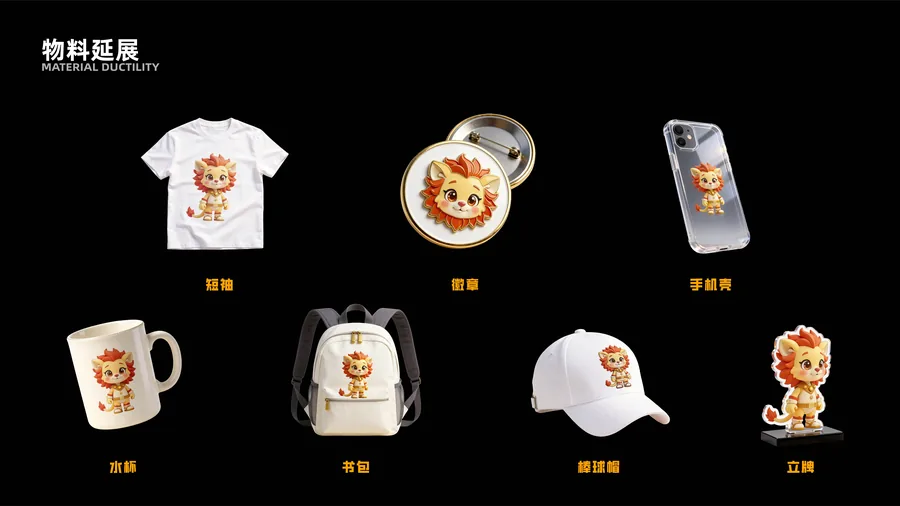

在IP设计阶段，我希望角色不仅具备基础视觉辨识度，同时能够满足后续内容传播与长期延展需求。在角色设定时，我重点考虑了：角色记忆点是否明确、不同情绪下的表情延展能力、多风格场景中的统一识别度、视频化与动态内容适配能力、周边物料中的应用可能性。整个项目并非停留在单一角色设计，而是尝试建立一套可持续扩展的IP视觉体系。
名字：狮小昂 | 年龄：12岁 | 身高：130cm
性格特征：心地善良、热情率真、坚韧不拔
记忆点：橙色鬃毛、大眼、勇敢乐观，对朋友友善
未来机能风 — 哑光黑色战术连帽风衣，胸口LED能量灯，碳纤维护甲，荧光绿电路纹路
蒸汽朋克 — 棕色皮质飞行夹克，齿轮护目镜，黄铜机械翼背包
国风仙侠 — 月白织锦长衫，金线祥云纹，玉佩流苏
废土风格 — 破旧牛仔马甲，金属铆钉，末日荒漠背景
整个项目涵盖了IP三视图设计、表情包延展（12个情绪表情）、分镜设计、多风格形象变化（4种风格）、物料延展（水杯、帆布包、徽章、短袖、手机壳、棒球帽、立牌）。通过AI工具辅助生成初始形象与多维度变体，在保持主体一致性的基础上拓展出丰富的视觉体系。








